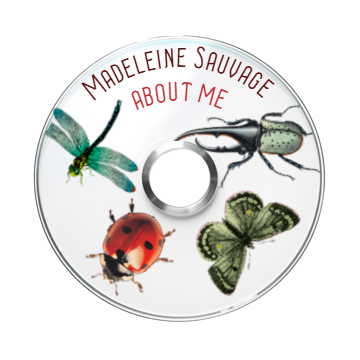
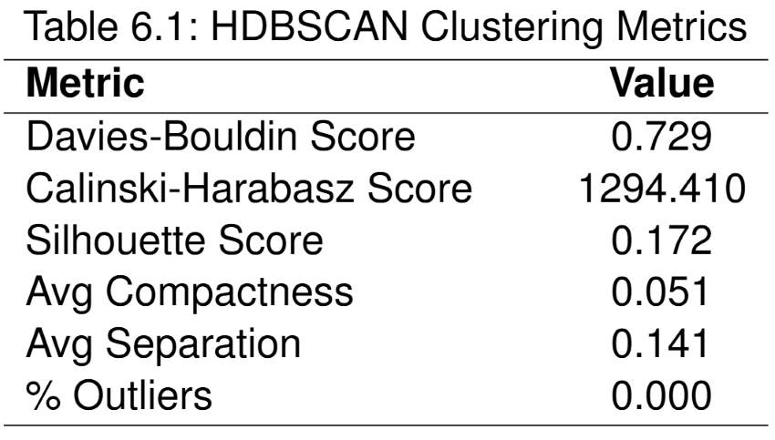

THE VERY HUNGRY CARDIGAN
@katiealicemakes
This was my first ever test knit, I was so nervous but it ended up being so fun!
It was my first time doing colourwork for a large piece, I definitely have a lot of gaps and pulling but blocking it helped.
I redid the apple motif a few times to try and improve it and went back over with duplicate stitching to neaten it up.
Yarn used:
Drops Flora: Lemonade (26), Misty Forest (23), amethyst (09)
BC Garn Bio Shetland: Wool White (01), Forest Green (8), Grass Green (10)
All other colours were scrap yarn I already had

GOODREADS RECOMMENDER SYSTEM
My Final Year Dissertation
Manual selection and bestseller lists tend to favour popular
books, overlooking lesser-known titles and limiting exploration. Despite its popularity,
Goodreads struggles to provide personalised and transparent recommendations due
to its outdated design and popularity-driven algorithms. Traditional collaborative filtering
struggles with cold-start users who lack interaction history, and content-filtering
can enforce bias and limit exploration. To address these issues, this project
explores a hybrid recommendationsystem designed to be more accurate, novel, and transparent, even with sparse data.
see the full paper here


ABOUT ME
Hi, I’m Madeleine! I did my bachelor's in Computer Science and now I'm a Postgraduate Researcher in the safety of AI.
My focus is on the lifelong safety of dynamic recommender systems using uncertainty to improve recommendations for long-tail items.
I believe safety in the Computer Science community deserves more time and should be seen not as a constraint but as an innovation in its own right.
I love knitting, reading, gardening, collecting CDs, and listening to radio 4.
This website is to document my projects — whether it's coding, research, knitting, or sewing.
I'm hoping this will be a good way to see my progress and keep myself accountable over the 4 years of my PhD.